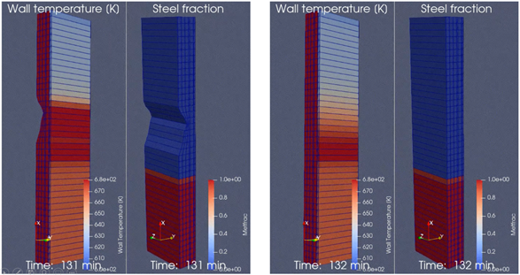

"Pragmatism in physics-based modeling" is a method/framework for developing physics-based mathematical models. Such models may serve as a digital twin alone or as companion with data-based AI/ML methods, to form hybrid digital twins to exploit the combination of data and physics-based modeling.
The purpose of "Pragmatism in physics-based modeling (PPBM)" is to device a generic methodology for development of physics-based models for application in digital twins. The PPBM provides a recipe for attacking a digital twin development, starting out from problem definition, information collection, including exact definitions of the output requirements for the model, assembling a system architects team, model specification, use of sub-level empirical or computed data, model building and application. The PPBM can only be developed further though application in industrial cases, like the Sidenor pilot case.
The physics, chemistry and numerical methods to be used may differ between applications, but PPBM should help the developers (system architects) to run though a set of well-defined steps on the way from problem definition to final application. For each new application using the PPBM new learning must be extracted and reported (published).
In the Sidenor pilot case offline data is used. The data has multiple challenges. We now explore extending the PPBM to applying a PPBM based application to clean the available data, but also provide additional simulated data. These combined data will be further be explored in a hybrid approach.
In the Sidenor pilot, applying and extending the PPFM method, we are developed a model for the ladle refractory erosion. The thermal model is now possible to operate, and an example is shown below. The erosion models are under development.
We can see that the steel level was surprisingly low in this case. This was found to be an error in the data. However, the thermal model alone demonstrates that different erosion levels on the inside of the lade will lead to different dynamics surface temperatures. In this case it supports that combining PPBF, thermal imaging and ML/AI a route to keep track on ladle life is possible.
Figure A: We see the outer surface temperature at time 131 min after metal was filled into the ladle. The ladle was initially eroded.
Figure B: Same case as in Figure A, but ladle has no initial erosion. The outer surface temperature of the ladle is significantly modified.